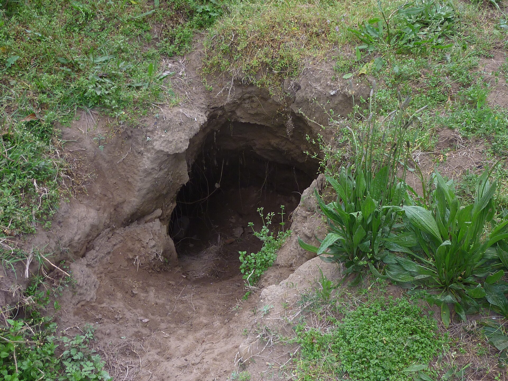

Audio of sound emitting from a wombat.

This is a picture of the Wombats burrow. They often use these for either sleep or refurge from predators. Wombats have a unique defense system that helps protect them from predators. Their rear end contains a thick, tough layer of cartilage that acts like a shield. When a predator tries to enter their underground burrow, a wombat can block the entrance with its strong backside. This makes it difficult for predators to bite or attack them. Their powerful bodies and unusual defense system help them survive in the wild.